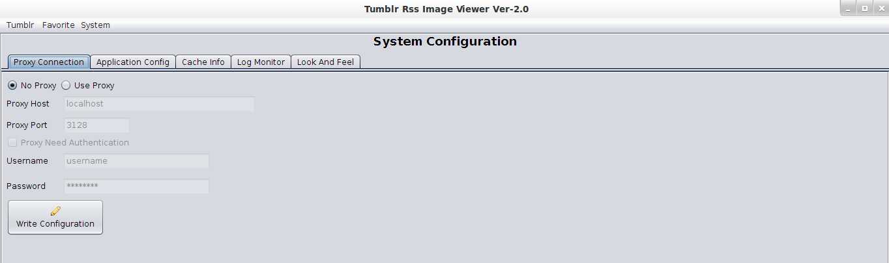
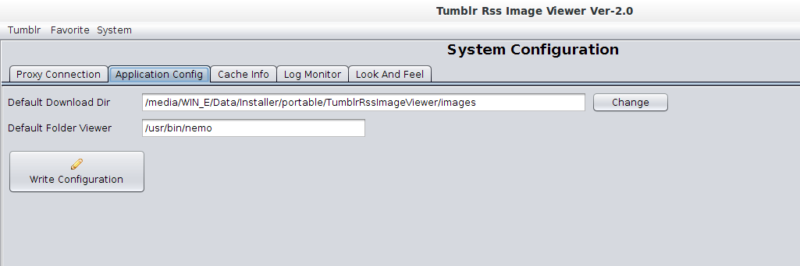
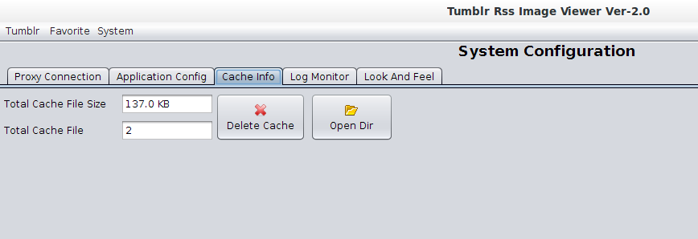
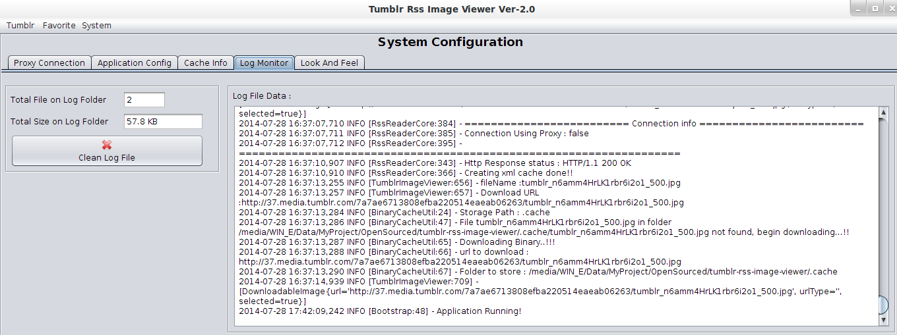
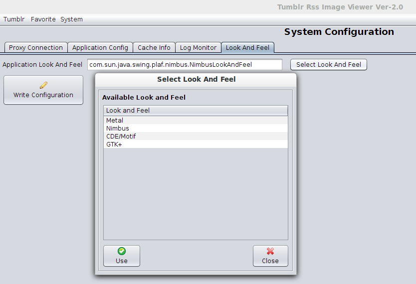

a. System Configuration
System Configuration form is a form to configure the application, the tabs display differents configuration:a.1 System Proxy Configuration
This tabs is displaying the configuration of how the application connecting to the internet. If the application connect to the internet behind proxy, the configuration should be done here.
a.2 Application Configuration
This tab is to configure the default directory to inspect movies, the default movie player, and the default viewer of directory browser
a.3 Cache Info
This tab contains the information about the cache size of this applications, if you need to delete the cache files, you can do it using this tabs. The cache stored a temporary image file when you search movies, actors or popular and trending movies.
a.4 Log Monitor
Through this tab you can find the information about the log size, and the running log of the applications, and if you need to clean up the log files, you can do it using this tab.
a.5 Look and Feel
This tab is displaying the Look and Feel of Java Swing configuration. Changing the Look and Feel require the application to restart to take effects
